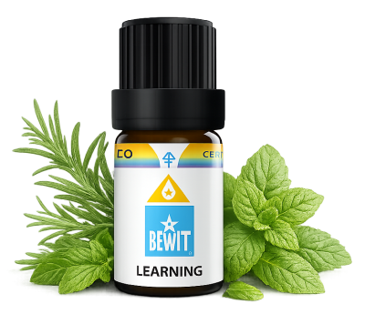

Paměť a učení
pro jasnou mysl a lepší zapamatování
Když se vám nedaří soustředit při studiu, informace se nedrží nebo cítíte mentální mlhu. Ukáži vám, jak přirozeně podpořit mozek, zlepšit zapamatování a učit se s větší lehkostí.

pro jasnou mysl a lepší zapamatování
Když se vám nedaří soustředit při studiu, informace se nedrží nebo cítíte mentální mlhu. Ukáži vám, jak přirozeně podpořit mozek, zlepšit zapamatování a učit se s větší lehkostí.

Směs přímo vytvořená pro podporu učení, soustředění a duševní výkonnosti.
Pomáhá udržet pozornost, zklidnit mysl a zlepšit zapamatování při studiu nebo tréninku nové dovednosti.
💧 Jak použít: přidej 3–5 kapek do difuzéru při učení nebo zředěný v nosném oleji (např. jojobový) nanes na zápěstí a spánky před studiem.
Zjistit více →💧 Jak použít: přidej 3–5 kapek do difuzéru při práci nebo studiu, nebo zředěný v nosném oleji nanes na zápěstí a spánky.
Chci se soustředit💧 Jak použít: přidej 3–5 kapek do difuzéru — zemitá vůně ihned aktivuje mysl.
Chci jasnou mysl💧 Jak použít: přidej 3–5 kapek do difuzéru — kadidlo zpomaluje dech i mysl a připravuje mozek na učení.
Chci hluboké soustředěníMozek pracuje nejlépe, když je klidný a dobře zásobený kyslíkem. Esence mohou být jednoduchým rituálem, který vám signalizuje: teď je čas na soustředění. Zkuste je při každém studiu nebo důležité práci. Výsledky přicházejí s pravidelností — dopřejte si čas.
Mohlo by vás také zajímat:
🌿 Všechny esence, které na tomto webu doporučuji, jsou od BEWIT. Jako registrovaný zákazník můžete nakupovat se slevou až 50 % na vybrané produkty.
Registrace u BEWIT zdarma →